- 00 先用大白话讲一遍（UX / 开发 / 美术先看这节）
- 01 这是什么
- 02 为什么做
- 03 系统规则
- 04 首期内容设计
- 05 美需
- 06 付费结构
- 07 发放货架
- 08 开发要做什么
- 09 要拍板的
- 10 每期换档怎么跑
00规则速览
0.1 系统构成
主城外观分四类：颜色 / 城基（城的下半段）/ 城市本体（城的上半段）/ 城辉（环绕整城的特效层）。
每一类对应一个星格。全系统共 4 个星格，系统级 —— 不是每款外观各带一套，换外观不影响星格进度。
每个星格上有两个数：星数（升星累计，无上限）和 属性值（战斗加成，累计）。
0.2 唯一的操作：升星
星数无上限，可以一直升下去 —— 这是本系统付费深度的来源。
全系统只有这一个消耗操作。 没有洗练、没有重随机、没有分解回收、没有「保留 / 替换」。
0.3 外观怎么到手
星数跨过阈值时，该星格的档位升一级（灰 → 紫 → 金 → 红），并额外解锁 1 款该类外观。
| 档位 | 阈值 | 解锁什么 |
|---|---|---|
| 灰 | 开启系统即得（0 星） | 每格第 1 款外观 + 第 1 个通用色 |
| 紫 | 第 5 星 | 第 2 款 + 第 2 个通用色 |
| 金 | 第 15 星 | 第 3 款 + 第 3 个通用色 |
| 红 | 第 30 星 | 第 4 款 + 第 4 个通用色。三格都到这里 → 城辉解锁 |
| 第 30 星以后继续升星，只涨属性值、不再解锁外观。 外观是升星路上的里程碑奖励，不是升星的唯一目的 | ||
外观任何货架都不直卖，只能这样解锁 —— 这是本案与现有主城套装最根本的差别。
0.4 城辉是唯一的例外
城辉格不能靠升星开。颜色 / 城基 / 城市三格全部到 30 星，它才自动解锁。 解锁后城辉格也能升星涨属性值，但它只有一款外观、没有档位递进。
城辉是全系统唯一的终局外观，不参与每期换新。四格都装红档外观时，整城额外点亮璀璨态。
0.5 三条绝不会发生的事（实现时要显式禁掉）
① 星数不会下降。任何操作、任何时间点都不会 —— 包括活动结束、赛季、换外观。
② 属性值不会下降。每次升星必然是「加」，增量恒为正。
所以界面上没有「保留 / 替换」这一步，也没有「本次结果不理想」这种提示。出现了就是做错了。
③ 外观不会回收，材料不会跨期清零。往期外观永不下架，没有赛季重置。
0.6 装配
已解锁的外观随时自由组合：城基 ×1 + 城市本体 ×1 + 城辉 ×1 + 各部位颜色。 装配零成本、无冷却、不消耗任何东西，换回旧款也免费。装配槽固定 3 个，不是付费点。
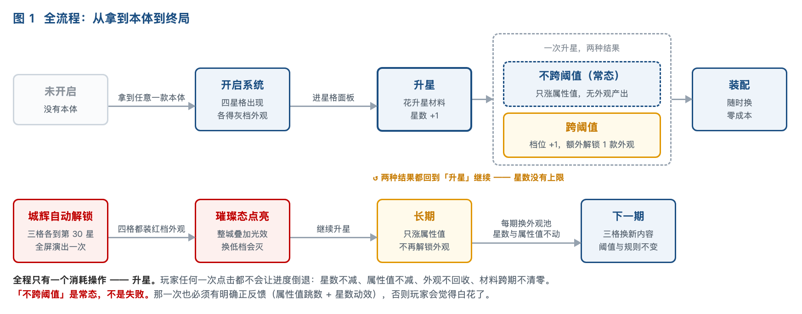
交互图共 8 张（横屏线框：全流程 / 界面地图 / 各界面状态），在开发需求表
J_万象主城 的「开发需求」页签里。UX 直接照那 8 张图做即可。
01这是什么

| 星格 | 管什么外观 | 档位 | 说明 |
|---|---|---|---|
| 颜色 | 通用色板 | 灰紫金红 | 最先开、最便宜。开出的每个颜色能刷城基 / 城市 / 城辉全部三个部位、全部款式 |
| 城基 | 城基款式 | 灰紫金红 | 这座城站在什么上面 —— 体量、轮廓基调、占地 |
| 城市 ★ | 本体款式 | 灰紫金红 | 主力付费格。这座城是什么 —— 题材、叙事、辨识度。主城和世界地图上第一眼看到的是它 |
| 城辉 | 环绕特效层 | 只有红 | 条件解锁：不靠升星开 —— 其余三格全部到 30 星才自动开。全系统唯一的终局外观 |
三条基础口径
① 外观只能靠升星跨阈值解锁，任何货架不得直卖。付费落在唯一一种升星材料上， 不落在「买一个皮肤」。这是本案与现有主城套装最根本的差别。
② 星数与属性值都只增不减。玩家的任何投入都不会倒退 —— 不降星、属性值不减、不回收外观、跨期不清零。这是他愿意长期投的前提。
③ 同档同品质，跨档必须递增。城基的紫级与本体的紫级规格相当； 但同一格里灰 → 紫 → 金 → 红必须越做越强（体量 / 光效层数 / 材质贵重度三个维度逐档加量）—— 这是玩家愿意继续升星的唯一视觉理由。上一版「所有款同品质、不分好坏」的口径已作废。
装配槽固定 3 个（城基 1 + 本体 1 + 城辉 1），装配本身零成本、无冷却， 已解锁的款随时换回来。槽位不是付费点 —— 付费点是「解锁到第几款」。
02为什么做
数据源：1312 city_skin / 1388 city_suit_module / 1389 city_suit 三表逐行实测。
| # | 现在的问题 | 实测依据 | 后果 |
|---|---|---|---|
| ① | 集齐即终点 | 7 套主城套装全是「2 皮肤 + 2 挂件 + 1 特效 = 5 件 → 送最终形态」，无一例外 | 一期最多 5 个可售单位，第 6 次付费无处可去 |
| ② | 玩家零选择权 | 1389 的 A_ARR_items 是策划填死的固定 id 数组 |
只有「集齐 / 没集齐」两种状态，「我的主城」不成立 |
| ③ | 换新即弃旧 | 1312 共 124 张皮肤，同时只能穿 1 张；套装之间无跨期互通 | 旧付费随新内容上线归零，玩家知道这事，反过来压当期购买 |
| ④ | 换色引擎闲置 | A_INT_dyeing_skin 已上线，2024 圣诞做到过「一皮四色」，但2026 全年新增 0 行 |
一整个维度没进投放 |
03系统规则
3.1 四个星格
全系统只有一套四个星格：颜色 / 城基 / 城市 / 城辉。不是每款本体各带一套 —— 换本体不影响星格进度。
每个星格上有两个数：星数（累计升了多少星，无上限）和 属性值（战斗加成，累计）。 档位是由星数换算出来的四段（灰 / 紫 / 金 / 红），不是第三个独立的数。
| 星格 | 属性类型 | 为什么给这一类 |
|---|---|---|
| 颜色 | 资源产量 | 最先开的格，给最没门槛的收益，让 0 氪也愿意点第一次升星 |
| 城基 | 建筑速度 | 「城站在什么上面」对应基建向属性，语义自洽 |
| 城市 | 部队攻击 | 付费主力格，给最被在意的战斗属性 |
| 城辉 | 全局加成 | 终局格，给一条小幅但覆盖面最广的加成 |
属性类型一经上线不再变更 —— 玩家会按属性类型规划升星顺序，改类型等于毁掉已做的规划。 升星只在本格既有的属性类型上加数值，不会加出别的属性类型。
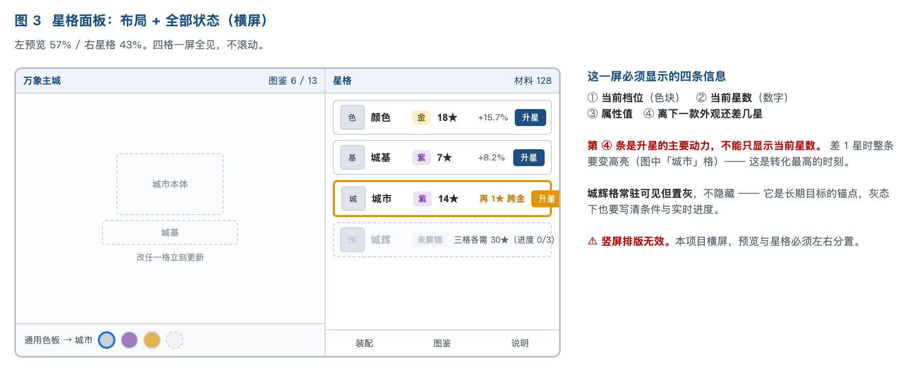
3.2 升星：一次做三件事，第四件有条件
| 步骤 | 做什么 | 发生条件 |
|---|---|---|
| ① | 扣除本次升星所需的升星材料 | 每次都发生 |
| ② | 该星格星数 +1 | 每次都发生 |
| ③ | 该星格属性值 + 一个随机正增量（小 / 中 / 大三档，恒为正） | 每次都发生 |
| ④ | 档位升一级 + 额外解锁 1 款外观 + 弹获得展示 | 仅当星数跨过阈值（5 / 15 / 30） |
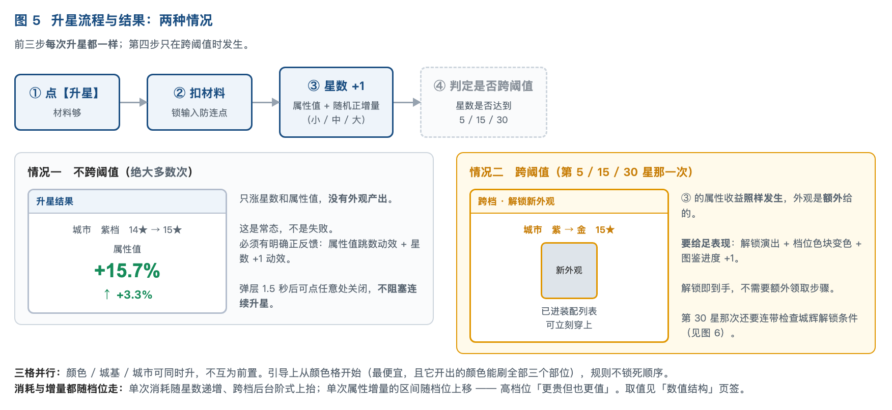
「不跨阈值」是常态，不是失败
绝大多数次升星是不跨阈值的 —— 只涨星数和属性值，没有外观产出。 这一次也必须有明确的正反馈（属性值跳数动效 + 星数 +1 动效）， 否则玩家会觉得「这次白花了」。
「没解锁外观」不等于「没收益」 —— 界面要把属性收益讲清楚。 跨阈值的那一次则要给足表现：解锁演出 + 档位色块变色 + 图鉴进度 +1。
颜色 / 城基 / 城市三格可并行升，不互为前置。引导上从颜色格开始（它最便宜， 且它开出的颜色能刷全部三个部位，第一次升星的正反馈最强），但规则不锁死顺序。
消耗与增量都随档位走：单次消耗档内缓涨（约 +8%/星）、跨档台阶式上抬（约 ×1.5）； 单次属性增量的区间随档位上移（期望约 1.6 倍/档）。所以跨档不只是「多一款外观」， 还是「此后每一星都涨得更多」—— 这是跨档的第二重收益，要在 UI 上讲出来。
3.3 属性值只增不减
每次升星，属性值必然在当前值之上增加。增量有大有小（小 / 中 / 大三档随机），但永远为正。 所以不需要玩家做任何选择 —— 升完直接生效。
这是本案不使用「洗练 / 重铸」这套词的原因
常规那套是「赌」：可能变差 → 所以要给玩家反悔的机会 → 玩家每次点都在担心亏 → 体验是焦虑。这也是洗练类系统最常见的投诉来源。
本案是「攒」：只会变好 → 不需要任何选择分支 → 每次投材料都有正反馈 → 体验是踏实。玩家的期待落在「这次涨多少」，不落在「会不会亏」。
由此产生的开发要求：属性值必须是累加型存储（存当前累计值 + 当前星数）， 不是「存最后一次随机值」的替换型。前端要能同时显示当前值与本次涨了多少。
星数无上限 → 属性值可以无限涨。数值安全靠「属性值 → 实际加成」走 对数型递减曲线 + 硬上限收口，不靠限制次数 —— 详见数值结构页第七章。
3.4 通用色板
色板是全系统一套，不绑定任何一款外观。颜色格每跨一档解锁 1 个颜色（首期共 4 色）， 解锁后立刻能用在城基 / 城市 / 城辉的任意款式上，包括以后每期新出的款。
三个部位各自选色：可以统一同色，也可以各选不同色。选色作用于「部位」而不是「款式」—— 换了款式，颜色保留。切色零成本、无冷却、不消耗材料。
⚠ 更早一版「每款部件各自带 1-2 个购买配色」的口径已作废。那一版里同一个紫色在城基 A 上是一个 SKU、
在城基 B 上又是另一个，玩家换款式颜色不跟过去；色板的价值被款数除掉了。
改成通用之后，色板的价值随外观款数线性放大。
配色是玩家唯一完全免费的自我表达位，不要给它加任何消耗或冷却。
3.5 城辉条件解锁 + 璀璨态
城辉格是唯一不靠升星解锁的格。解锁条件 = 颜色 / 城基 / 城市 三格全部到 30 星。 条件达成瞬间自动解锁，不需要玩家再点确认；解锁时全屏演出一次。
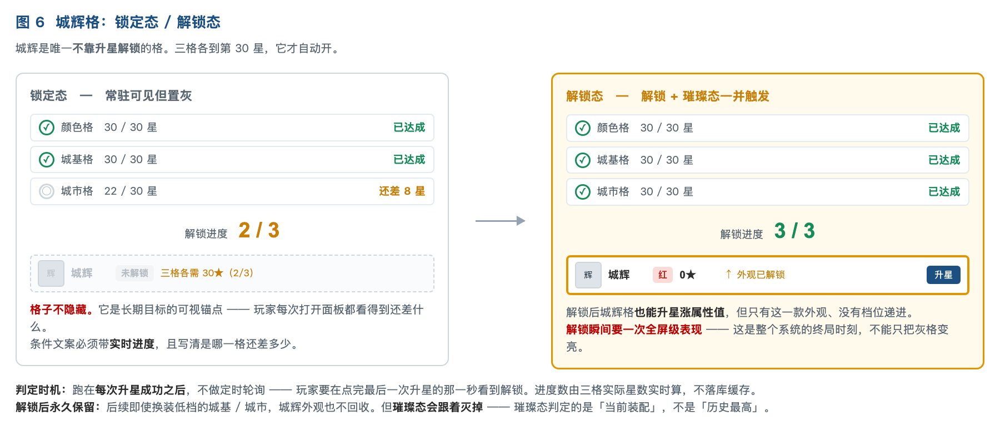
| 口径 | 规则 |
|---|---|
| 判定时机 | 跑在每次升星成功之后，不做定时轮询 —— 玩家要在点完最后一次升星的那一秒看到解锁 |
| 进度显示 | 灰态下也要写清条件文案，且带实时进度 (2/3) 与「哪一格还差多少星」 |
| 格子可见性 | 常驻可见但置灰，不隐藏 —— 它是长期目标的可视锚点 |
| 解锁后 | 城辉格可以升星涨属性值，但只有这一款外观、没有档位递进 |
| 璀璨态 | 四格都装红档外观时，整城额外叠加一层全局光效。 是计算态不是存储态 —— 由「当前装配」实时判定，换低档外观会灭掉，不写库 |
解锁瞬间要有一次全屏级表现：这是整个系统的终局时刻，不能只把灰格变亮就完事。
城辉外观解锁后永久保留，换装低档城基 / 城市也不回收；但璀璨态会跟着灭掉。
04首期内容设计
上一版是「城基比三种托举方式、本体比四种神器姿态」—— 那是同一题材下的变体， 做出来玩家分不清谁比谁强。这是本系统第一次做，差异必须拉到最大。
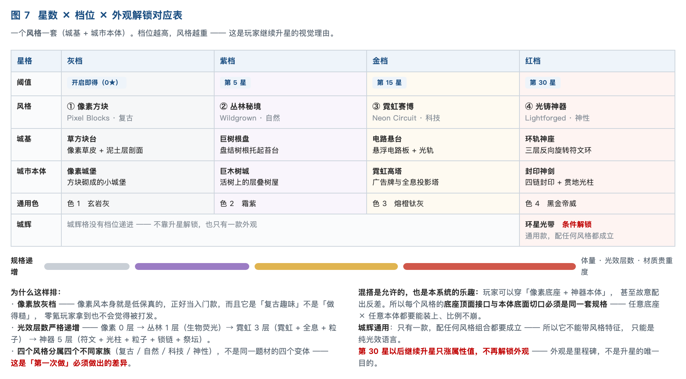
| 档位 / 阈值 | 风格 | 城基 | 城市本体 | 光效层数 · 材质 · 体量 |
|---|---|---|---|---|
| 灰 0★ | ① 像素方块 复古 | 草方块台 | 像素城堡 | 0 层 |
| 紫 5★ | ② 丛林秘境 自然 | 巨树根盘 | 巨木树城 | 1 层（生物荧光）· 活木/苔石 · 中 |
| 金 15★ | ③ 霓虹赛博 科技 | 电路悬台 | 霓虹高塔 | 3 层（霓虹+全息+粒子）· 金属/玻璃 · 大 |
| 红 30★ | ④ 光铸神器 神性 | 环轨神座 | 封印神剑 | 5 层（符文+光柱+粒子+锁链+祭坛）· 光铸/鎏金 · 最大 |
| 城辉 1 款 环星光带（红档，条件解锁）—— 通用款，不属于任何风格，要能配任何组合。通用色 4 个跟着档位走：玄岩灰 / 霜紫 / 熔橙钛灰 / 黑金帝威 | ||||
为什么这样排
像素放灰档 —— 像素风本身就是低保真的，正好当入门款；而且它是「复古趣味」不是「做得糙」， 零氪玩家拿到也不会觉得被打发。这一点是这套排序成立的关键。
光效层数严格递增：0 → 1 → 3 → 5。玩家跨一档就能明确感到「亮了一层」。
混搭是允许的，也是本系统的乐趣 —— 玩家可以穿「像素底座 + 神器本体」，甚至故意配反差。 所以四个风格的底座顶面接口与本体底面切口必须是同一套规格， 任意底座 × 任意本体都要能装上、比例不崩。
4.1 ① 像素方块 · 灰档 —— 全套里最克制的一档
风格锚点：体素 / 8-bit 游戏美术。大块立方体、硬边、低分辨率贴图、平涂色 + 简单抖动。不做任何光效与粒子。
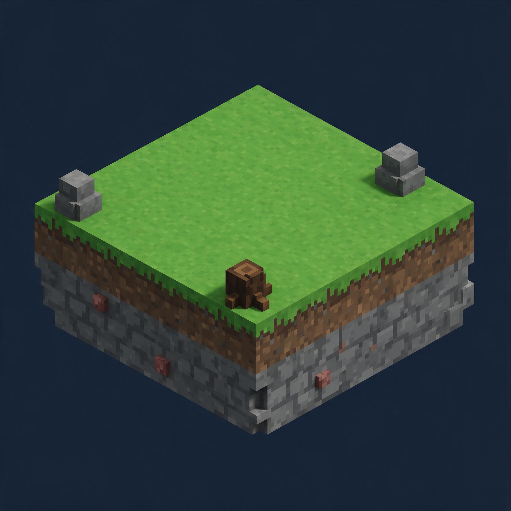
B1 草方块台
造型一块厚方形板悬在空中，顶面是平整、完全留空的亮绿像素草皮。侧壁是方块化的泥土层与石层剖面，夹几颗矿石方块。边缘角落做出台阶式退层。只在最外沿放一两颗方块石头和一个方块树桩 —— 顶面中心必须空。
颜色草绿顶面 + 泥棕侧壁 + 灰石层。无光效。
动态几乎不动。允许草叶一格一格地翻（逐帧 2 帧），边缘偶尔掉一颗泥块方块。
本档规格0 层光效。这是全套最克制的一款，要给上面三档留足加量空间。
避坑不做《我的世界》的具体建筑；方块要够大（一眼看出是方块，不是低模）；不要加发光。
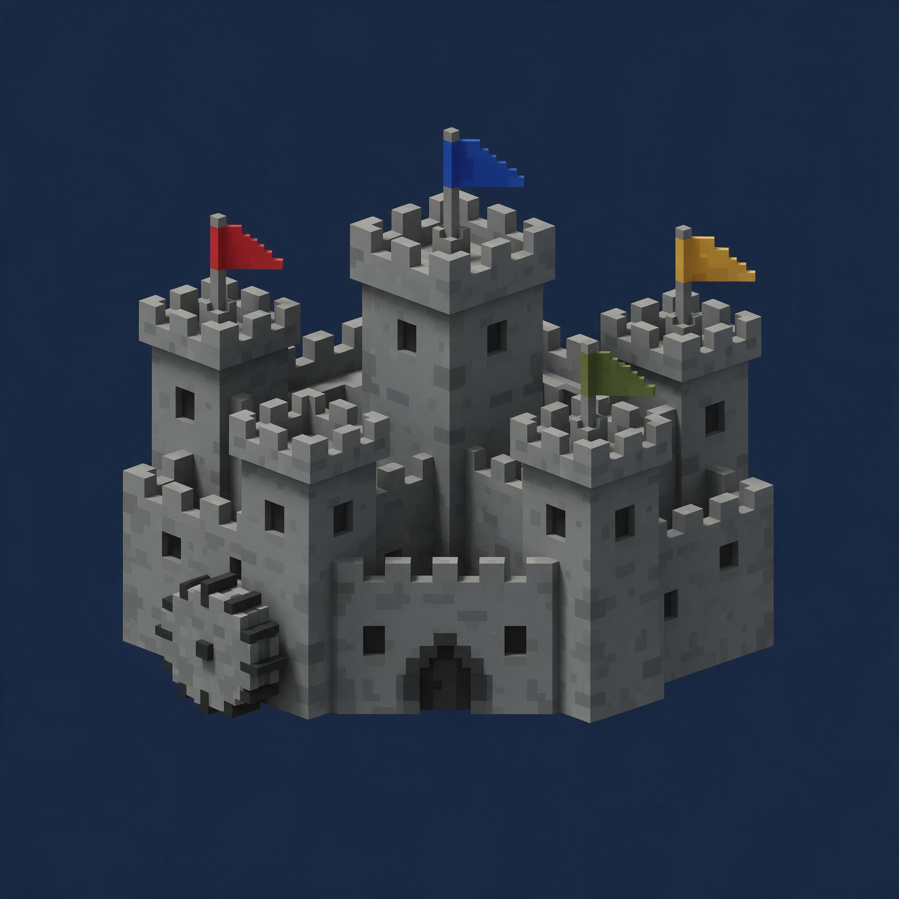
C1 像素城堡
造型方块砌成的小城堡：方塔 + 阶梯式城垛 + 一个小拱门。窗户就是单个深色方块。旗子是平面色块拼的三角旗。侧面一个方块水车。整体轮廓要方、要清晰，底面平切。
颜色石灰方块墙 + 木棕屋顶。窗口只用深色方块表示，不发光。
动态旗子逐帧摆动（2-3 帧）、水车一格一格转。
本档规格0 层光效、体量最小。它和 C4 封印神剑摆在一起时差距要一眼看得出来 —— 这个差距就是玩家升星的动力。
避坑不做等身高清城堡再降分辨率（要真的用方块搭）；不要做太多细节（像素风的识别度来自简）；旗子不做真实国旗。
4.2 ② 丛林秘境 · 紫档 —— 加一层生物荧光
从「无机方块」跳到「活的东西」。这一档的爽点是材质完全换掉 —— 从平涂方块变成有生命感的木、苔、藤。
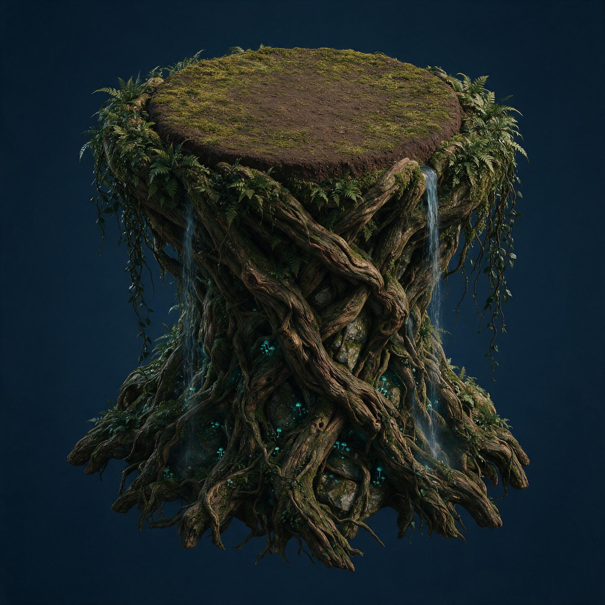
B2 巨树根盘
造型巨大盘结的树根向上编织、互相咬合，共同托起一块平整、完全留空的夯土圆盘，圆盘表面铺一层短苔。根与根的缝隙里垂下藤蔓和蕨类，缝隙里有青色生物荧光小菇。两条细瀑布从树根侧面流下。
颜色深褐树根 + 苔绿 / 灰石 + 青色生物荧光（弱、只在缝隙里）。
动态藤蔓与蕨叶轻摆、瀑布持续流、荧光菇缓慢呼吸式明暗。
本档规格1 层光效。只有荧光菇发光，不做整体发光 —— 整体发光是金档的事。材质贵重度从「方块」升到「活木 + 苔石」。
避坑不做盆栽或花坛；根要够粗（承重感）；荧光不要满屏（只在暗处的缝隙里）。
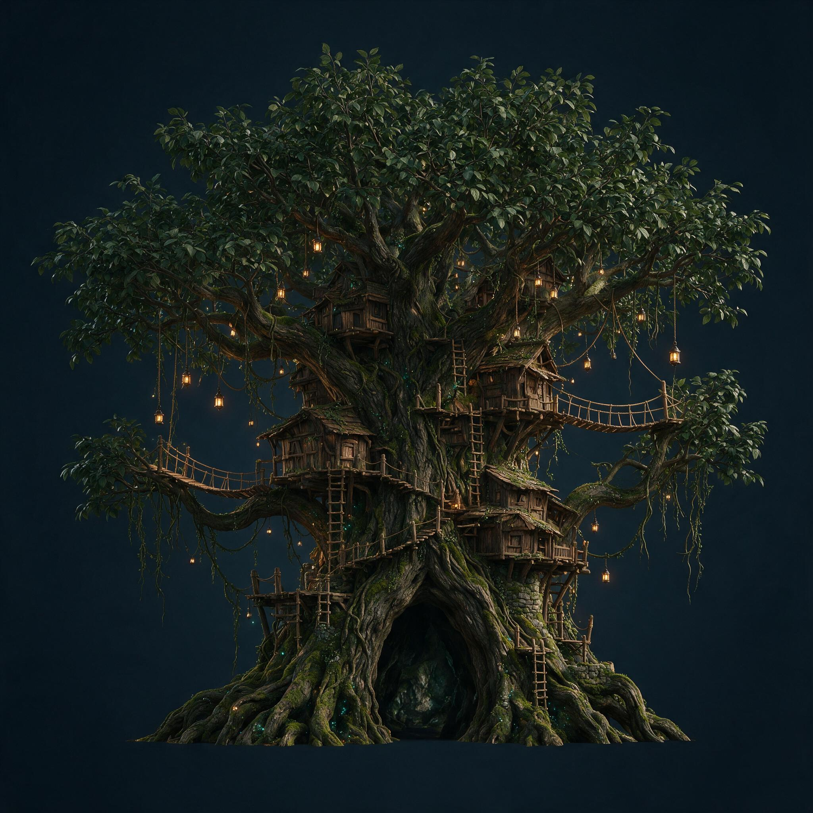
C2 巨木树城
造型一棵巨大古树，树冠宽展。层叠的木质树屋和绳桥缠绕在树干上、延伸到粗枝上，配梯子和木板栈道。挂着暖光小灯笼。粗藤与阔叶覆盖部分树干。树干上一个树洞当主城门。底面平切。
颜色活木褐 + 叶绿 + 麻绳木板 + 暖黄灯笼光（点状）。
动态树冠叶片整体轻摆、绳桥微晃、灯笼光轻微明暗、偶有落叶飘下。
本档规格1 层光效、体量中。比像素城堡明显大一圈、明显更有细节，但不做霓虹与粒子场。
避坑不做精灵风或童话风（要粗野、要住人）；树屋要看得出是「搭上去的」不是长出来的；灯笼是点状暖光不是整体发光。
4.3 ③ 霓虹赛博 · 金档 —— 光效第一次成为主角
前两档光效是点缀，这一档要让人一眼记住「它在发光」。风格锚点：高密度霓虹街区、全息招牌。暗底 + 强饱和洋红/青。
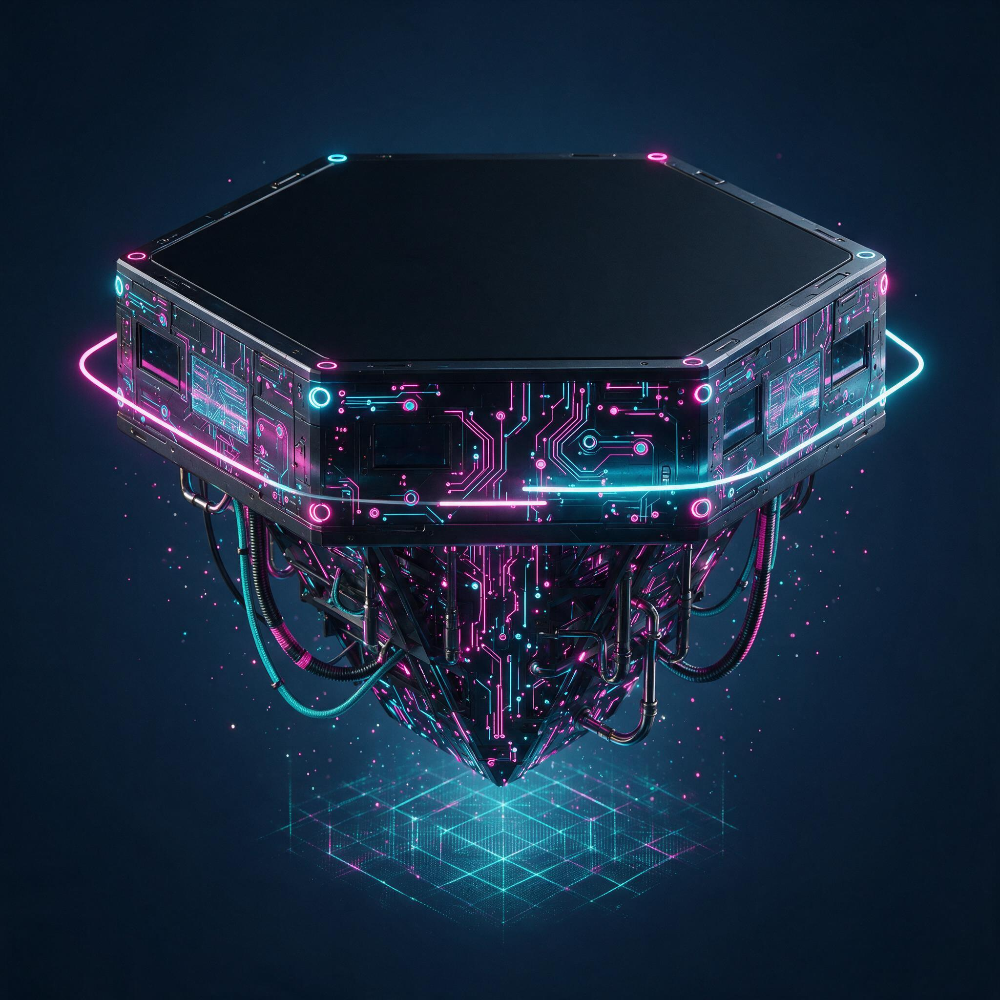
B3 电路悬台
造型悬浮的暗色六边形板，顶面平整、完全留空、哑光黑。侧壁密布电路走线，发洋红与青色光。底面垂下成束线缆和冷却管。三条细霓虹光轨绕着台缘缓慢环行。台下方投出一层淡淡的全息网格。
颜色暗金属黑 + 钛灰构件 + 洋红 / 青双色霓虹（走线 / 光轨 / 全息网格三处）。
动态电路走线的光有流向（从中心往外）、三条光轨反向环行、全息网格轻微闪动。
本档规格3 层光效（霓虹管 + 全息 + 粒子）。体量比 B2 大。材质升到金属 + 玻璃 + 霓虹。
避坑不做主板特写（要建筑体量不要电子产品）；顶面必须哑光不反光（本体要装上去，反光会抢戏）；霓虹只用洋红+青两色，不要彩虹。
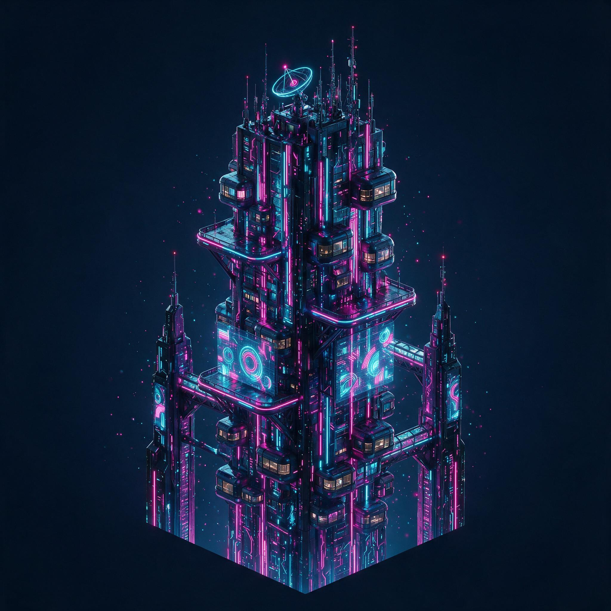
C3 霓虹高塔
造型一座细高塔：模块化胶囊住舱层叠、外挑平台。塔身立面是一整片竖向霓虹招牌带（洋红/青）。两块大型全息广告面板投射抽象图形。塔顶天线簇 + 旋转雷达盘。两侧各有一座小尖塔用天桥连过来。底面平切。
颜色暗金属 + 玻璃 + 钛灰湿反射面 + 洋红/青霓虹 + 全息蓝白。
动态霓虹招牌逐段亮灭滚动、全息面板图形循环变化、雷达盘匀速转、光粒子从塔身向上飘。
本档规格3 层光效、体量大。竖向剪影要利落 —— 它是四款本体里最「高」的一款。
避坑招牌上不要出现可读文字（用抽象色块和符号）；不做整栋楼满屏发光（要有暗部对比）；不做现实城市地标。
4.4 ④ 光铸神器 · 红档 —— 顶配
终局档。它要压得住「三格升满 → 解锁城辉」这个节点，所以必须一眼比金档更重。
共同语言：光铸材质（不是钢铁）+ 表面流转金色符文 + 封印语言（锁链 / 光柱 / 悬浮石板）+ 城围着它建成祭坛。
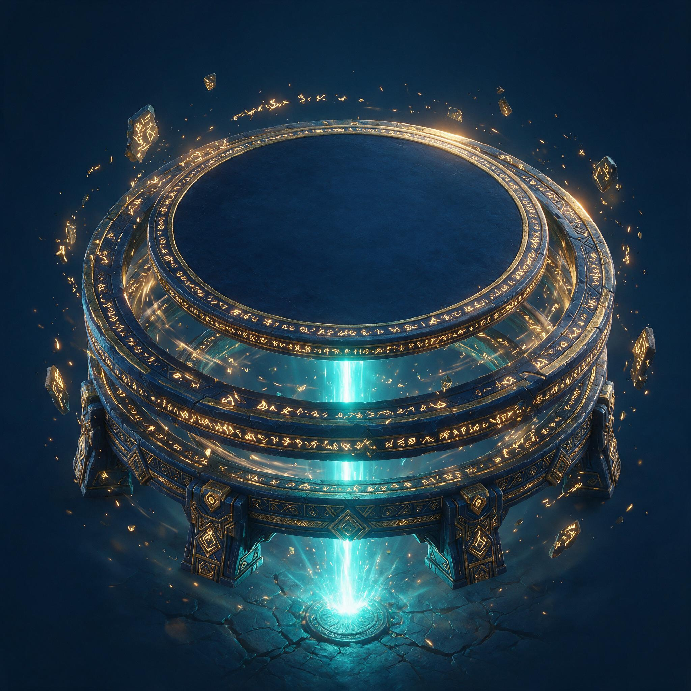
B4 环轨神座
造型三层同心的光铸石环水平嵌套、层层反向旋转，最内层是最大的一块实心圆盘、它平整的顶面就是留空的平台。每层环缘刻满流转金色符文。环与环的缝隙里悬浮碎裂符文石板与光尘。底面正中一道青色光柱垂直贯入地面，落点有涟漪。四周整圈符文碎片绕行。
颜色深蓝光铸石 + 鎏金符文刻线 + 青色贯地光柱 + 金色符文流光。
动态三层环反向匀速旋转（速度各不同、要看得出层次）· 符文沿环缘流动 · 光柱脉动并在地面荡出涟漪 · 碎片绕行。
本档规格全套城基里体量最大、光效层数最多。四层光效全上。
避坑不做传送门 / 魔法阵地板；三层环转速要有差异（同速会看成一整块）；顶面仍必须完全留空。
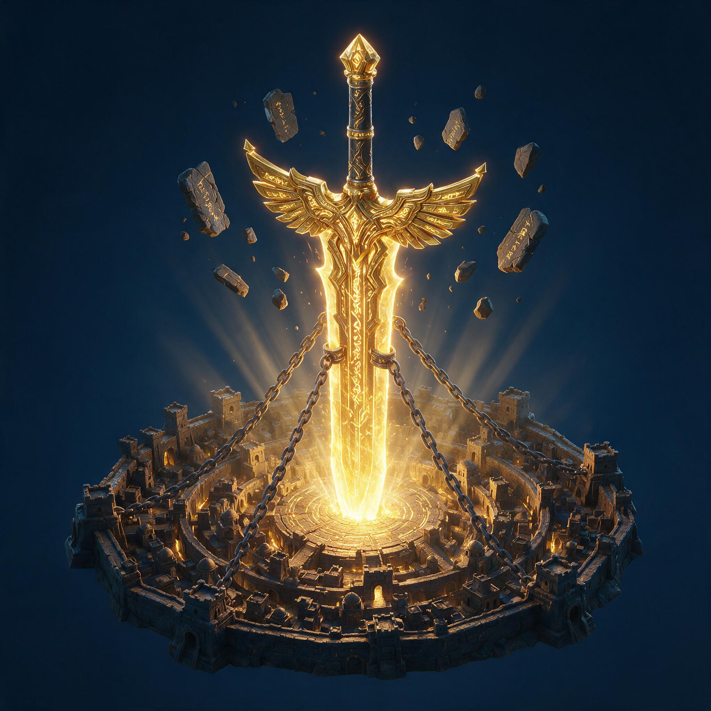
C4 封印神剑
造型光铸巨剑倒插入城心，剑身是光而非钢、刻满流转金色符文，剑格张开如一对羽翼。四条巨链从城的四角绷紧拉住剑身（封印感）。刻字石板悬浮并缓慢绕剑柄旋转。城建成同心圆环围着剑像一座祭坛，剑插入处升起一道光柱。
颜色金色光铸剑身 + 暗铁锁链与石板 + 符文流光与插入点光柱。
动态符文沿剑身流动、石板缓慢绕行、锁链轻微张紧震颤、光柱脉动。
本档规格本体列顶配。封印语言四条全上（四条巨链 + 悬浮石板阵 + 贯地光柱 + 同心圆祭坛）。剑格张开如羽翼是剪影最夸张的一款。
避坑不做钢铁质感的实体剑；符文不要满身贴（要有主次和流向）；只做剑 + 脚下祭坛环，不做地基和岛。
4.5 城辉 1 款 · 通用（不属于任何风格）

A1 环星光带
表现一道光带从城体腰部升起、绕整座城水平铺开成一个略倾斜的环。 内层青色实心光带、外层裹一层金色细碎光尘，两层反向缓慢旋转。光带经过城体时从建筑背后穿过、正面转半透明。 城基周围持续有橙金余烬往上飘，飘到光带高度被卷进环里带走一圈再消散。
硬约束它必须配得上任何风格组合 ——
像素底座 + 像素城堡也要能戴它而不违和。所以只能是纯光效语言，不许带任何风格特征
（不做像素化的环、不做藤蔓环、不做霓虹环）。
绝不允许盖住本体的识别轮廓 —— 必须从建筑背后穿过、正面转半透明。
避坑不做土星环那样的宽扁盘；不满屏粒子；不闪频过快（主城是常驻界面会累眼）。
4.6 通用色板 4 个
| 解锁档位 | 颜色名 | 色感 | 材质规格（本档加量） |
|---|---|---|---|
| 灰档 | 玄岩灰 | 冷灰石材 + 极少金色矿脉 | 单色，无特殊材质。不加金属度、不自发光 |
| 紫档 | 霜紫 | 冷紫主色 + 深灰构件 | 加金属度，多一条灯带 |
| 金档 | 熔橙钛灰 | 熔橙主色 + 冷灰钛金属 | 加流光，局部自发光 |
| 红档 | 黑金帝威 | 黑曜底 + 金纹刻线 | 整体发光 + 粒子附着（本档最贵重） |
每个颜色要出三套材质（城基用 / 本体用 / 城辉用）。
⚠ 像素风那款要特殊处理：像素风不能上流光和粒子（会毁掉像素质感）。
方案 = 像素款只吃色相与明度，高档色板的「流光 / 自发光 / 粒子」这几层在像素款上不生效，只换色块颜色。
这条要写进材质规则。
05美需
颜色这块怎么给美术讲（每款都要讲到这四层）
| 层 | 要讲什么 | 例（B3 晶簇台） |
|---|---|---|
| 默认色名 | 四字色名，随部件一起获得、不单卖 | 霜紫 |
| 主色 + 辅色 + 光色 | 三段拆开写，不要只给一个笼统色 | 冷紫晶体（主）+ 深灰金属桁架（辅）+ 青白内光（光） |
| 与同组其它款的色相关系 | 同品质的几款摆一起要一眼分清，色相必须刻意拉开 | 与 B1 的青蓝、B2 的黄铜刻意拉开色相 |
| 可购色板的色感 | 每个色板一句话，说清「哪块换成什么」 | 翡翠夜光＝深绿晶体 + 荧绿内光 ｜ 赭石晨曦＝暖赭红 + 晨光金 |
⚠ 只写「深灰色调」这种笼统描述，美术只能猜。 主色管大面积、辅色管结构件、光色管发光部位，三段分开给，返工率会低很多。
四条通用硬约束（比单款造型重要，美术开工前必须先定）
万象主城是常驻系统，部件要跨期互相搭配：这期的本体要能装往期所有底座，这期的色板要能刷往期所有部件。 下面四条一旦定死就不能改 —— 事后改等于已产的全部部件重做。
- 底座顶面必须留净空区。三款底座的顶面挂载点坐标、朝向、可承载直径全项目一套值， 顶面中心不许有凸起结构（本体会插进去）。
- 本体底面必须平切。接口尺寸上限、重心位置、包围盒上限统一， 底部不要长出悬浮岛式的参差结构（首轮出图 AI 就长过，被驳回重出）。
- 材质槽命名必须统一。色板靠材质槽做批量替换（如
body_main / body_trim / glow_a）， 命名不统一就只能逐款手配，后续每期 8 个色板的产能直接卡死。 - 城辉不许遮挡本体的识别轮廓。本体是付费大头，特效盖住等于削弱玩家刚买的东西 —— 光带必须从建筑背后穿过、正面转半透明。
⚠ 这四条的具体数值请美术在首期开工前给出，配置与后续所有期都按这套值走。
5.1 每款要交付什么（给美术的清单）
下面是一款部件从美术侧交付的完整清单 —— 缺任何一项配置就落不了地。
| 交付项 | 城基 | 本体 | 城辉 | 色板 | 说明 / 落到哪张表 |
|---|---|---|---|---|---|
| 3D 模型 | ✓ 每款 1 套 | ✓ 每款 1 套 | — | — | 按 §5.2 的挂载点 / 平切规格；模型 key 登记进 1511 |
| 材质与贴图 | ✓ | ✓ | — | ✓ 每色 1 套 | 材质槽命名必须统一（body_main / body_trim / glow_a），色板按槽名整套替换 |
| 动态 / 特效 | ✓ 有动态的款 | ✓ 每款都要 | ✓ 主体就是特效 | — | 循环型（不是触发型）；城辉 prefab 路径登记进 1512 |
| 道具图标 | ✓ 每款 1 个 | ✓ 每款 1 个 | ✓ | ✓ 每色 1 个圆点 | 列表 / 商店 / 图鉴用；图标 key 登记进 1511。色板的是配色条上的圆形色点 |
| 槽位缩略图 | ✓ | ✓ | ✓ | — | 装配界面三个槽里显示的小图，比道具图标更小更简 |
| 图鉴卡面 | ✓ | ✓ | ✓ | ✓ | 图鉴四册的卡片图 + 未拥有时的暗色剪影版（剪影是购买动机，不能只给彩色版） |
| 璀璨态叠加光效 | 全系统 1 套（不按款出） | 三槽装满 + 当期城辉时叠加的全局光效 + 城池名特效 + 铭牌标记 | |||
首期合计要交付：8 套模型（4 城基 + 4 本体）+ 1 套城辉特效 + 12 套色板材质（4 色 × 3 类部件）+ 13 个道具图标（9 件 + 4 色点）+ 9 个星格缩略图 + 13 张图鉴卡面 × 2 态（彩色 + 剪影）+ 1 套璀璨态光效。
5.2 每款的避坑项（美需表里逐款展开，这里只列最容易踩的）
| 部件 | 避坑 |
|---|---|
| B1 浮岩台 | 不要做成飞行器底盘 · 喷口不要做成火箭尾焰（要「托举」不要「起飞」）· 碎石不要多到糊住轮廓 |
| B2 巨轮台 | 不要做成钟表机构（要重工业）· 齿牙要有磨损缺口 · 轴心与甲板要有「不随轮转」的分离感 |
| B3 晶簇台 | 不要做成宝石堆或水晶洞（那是收集品语言）· 晶体不要太规整 · 桁架是加固不是脚手架 |
| B4 环轨神座 | 不做传送门 / 魔法阵地板（那是功能性 UI 语言）· 三层环的转速要有差异，同速会看成一整块 · 顶面必须完全留空，不许在圆盘上加祭坛纹样 |
| C1 张弦神弓 | 弦必须是光不是绳 · 箭不要发射（保持蓄势）· 聚落上的小旗不要做成真实国旗（首轮已踩）· 只做弓 + 脚下平台 |
| C2 贯天神矛 | 不做现实中的具体武器型号 · 电弧不要满屏（会糊掉矛身轮廓）· 只做矛 + 中段平台 |
| C3 回响神钟 | 不做教堂钟或宗教符号 · 涟漪不要做成音符或声波图标 · 只做钟 + 垂链 + 听经平台 |
| C4 封印神剑 | 不做钢铁质感的实体剑 · 符文不要满身贴（要有主次和流动方向）· 只做剑 + 脚下祭坛环，不做地基和岛 |
| A1 环星光带 | 不要做成土星环那样的宽扁盘 · 不要满屏粒子（会糊掉城体）· 不要闪频过快 |
| 通用色板 | 四个色的色相要两两拉开，不要「两个都偏暖金」· 霓虹类只保留一条主霓虹线 · 每个色都要在 4 城基 + 4 本体上试贴一遍 |
一个题材冲突，提前说清
主城套装的循环档期是 3 月科技节和 11 月感恩节。科技节历年方向已用满 废土工具 / 废土工业 / 摩登都市 / 星际飞船 / 军事机甲，调性是科技；本案首期是神器 / 奇幻方向。
本案首期四款本体走的是神器方向（弓 / 矛 / 钟 / 剑）， 没有猿族元素，所以与科技节的去猿族化口径不冲突；但神器方向偏奇幻， 与科技节的科技调性也不搭。结论不变：档期上避开 3 月科技节。
万象主城是常驻系统、不是节日套装循环 —— 首期主题（神器）做中性不绑节日， 节日主题留给后续每期新增的那几款（每期换三格的外观池）。 所以美需没挂节日 tab，走「临时需求」那类独立 tab（主表已有先例：临时需求-世界杯装饰物）。
06付费结构
6.1 付费点
卖的是材料，不是外观。四个付费点，只有一种材料。
| 编号 | 卖什么 | 玩家在什么情形下会买 | 货架 |
|---|---|---|---|
| P1 | 升星材料（大额档）★ | 差几星就跨档，而下一档那款外观已经在图鉴里亮着剪影 → 一次买够 | 节日 GACHA / 常驻商店 |
| P2 | 升星材料（小额档） | 日常补量。单价低、可反复买，是本系统的长尾复购 —— 星数无上限，永远有地方投 | 限时抢购 / 省省卡 |
| P3 | 首个城市本体 | 还没开启系统 → 拿第一款本体。必须同时给免费路径， 付费只做「更快拿到」 | 节日 GACHA |
| P4 | 当期综合礼包 | 想一次拿到升星材料 + 当期道具 | 累充 / 签到 / BP 付费轨 |
⚠ 更早一版分「升星材料 / 洗练材料」两种，已合并为一种 ——
两个操作合成一个之后第二种材料没有存在意义；而且两种材料会让玩家纠结「这份该投哪边」，
这个选择没有正确答案，只会让人卡住不敢花。
外观解锁点是有限的（9 个），升星次数是无限的 —— 前 30 星的手感是「攒够就有新外观」（确定性目标），
30 星以后的手感是「随时可投、每投必涨」（无门槛消耗）。同一种材料承载两段曲线。
6.2 付费深度从哪来
2 皮肤 + 3 挂件
4+4+1 件 + 4 通用色
升星次数无上限
上一版按「可售单位数」算深度（首期 19 / 全年 87）。星格版不再用这个口径 ——
外观不卖了，深度改由升星材料的消耗总量承载，且因为星数无上限，深度没有天花板。
这个改法把付费深度的天花板拆掉了：现在模式一期最多 5 个 SKU，第 6 次付费无处可去；
星格版的星数无上限，玩家想追多高都有地方投，而数值安全靠递减曲线 + 硬上限收口，不靠限制投入。
红线（定版，逐期不改）
- 外观不可直购 —— 任何货架不得直接出售「某一款外观」。外观只能由升星解锁， 否则整个养成结构失去意义。
- 星数不可直购 —— 可以卖材料，不能卖「直接 +N 星」。
- 不卖指定属性值 —— 卖「一次升到某个数值」等于把属性明码标价，会引发数值军备。
- 城辉外观不参与任何售卖 —— 它是三格满级的唯一奖励。
- 装配槽永久 3 个，不随期数增加、不作为付费点。
- 材料跨期不清零，往期外观永不下架 —— 它是常驻养成线，清零等于让长期玩家的投入归零。
- 不设外观付费墙 —— 灰档那套（像素方块）开启系统即得；免费产出必须能让零氪玩家持续升星，只是慢。
07发放货架
本系统不新建任何发放玩法。除 D1 外全部挂现有坑位，每期只换商品内容。 所有货架发的都是材料，没有一个货架发外观。
| 通路 | 货架 | 发什么 | 说明 |
|---|---|---|---|
| 付费 | |||
| D1 | 万象主城常驻商店 | 升星材料常驻档位 | 唯一新建的货架；常驻在架，不随档期下架 |
| D2 | 节日 GACHA | 升星材料（大额）+ 首个本体 | 沿用现有 GACHA 坑位，只换奖池 |
| D3 | 累充（个人 / 服务器 / 联盟） | 升星材料组合包 | 沿用现有三件套结构 |
| D4 | 限时抢购 / 省省卡 | 升星材料小额档（低单价高频位） | 长尾复购的主要落点 |
| D5 | 节日 BP 付费轨 | 升星材料大额档 | 档期内的集中投放位 |
| 免费（零氪闭环保底） | |||
| D6 | 签到 / 每日任务 | 每日少量升星材料 | 零氪的日常正反馈 —— 星数无上限，天天能升 |
| D7 | 节日 BP 免费轨 | 每期保底一定量升星材料 | 保证零氪每期都能推进星级，只是慢 |
| D8 | 活动积分兑换商店 | 升星材料兑换位 | 把其他玩法的积分导进本系统 |
| D9 | 本系统专属排行榜 | 按名次给升星材料 | 给活跃玩家一条不花钱的加速道 |
| 存量接入 | |||
| D10 | 历史主城套装转译 | 7 套旧套装 → 一次性升星材料补偿 + 保留旧套装可穿 | 边界见 §09 第 3 条 |
7.1 各分层应该走到哪
| 分层 | 首期结束时应能达到 | 不应能达到 | 设计意图 |
|---|---|---|---|
| 零氪 | 三格里至少一格到 15★（金档）；解锁 6~8 款外观 | 三格各 30★（拿不到城辉） | 保证 0 氪能玩、能换样子、能看到升星反馈，终局外观留给付费 |
| 小额 | 三格全到 15★；解锁 9~10 款 | 三格各 30★ | 让小额玩家看到城辉就在一步之外 —— 这是转化点 |
| 中氪 | 首期内三格各 30★ + 拿到城辉 | — | 城辉是中氪的终局目标，首期内可达 |
| 大 R | 三格各 30★ + 继续升到递减段后段 | — | 后续投入转为 30★ 以上的长尾升星 |
免费材料与付费材料完全同一种道具 —— 全系统只有这一种材料，不做「免费材料只能升到某档」这类限制。
区分靠速度不靠品质：零氪走得慢，但每一步都走得到。
⚠ 上表四行成立的前提是免费产出配额与付费货架档位配平 —— 这两组数是数值页的 ★ 待定版项。
08开发要做什么
⚠ 与上一版最大的差别：不再做 1389 槽位化改造。 外观来源从「玩家拥有的部件」变成了「星格解锁状态」，所以主项变成一套养成数据结构。
| 项 | 性质 | 说明 |
|---|---|---|
| 星格养成数据 | 新做（主项） | 4 格 × (当前星数 + 当前累计属性值 + 当前装配的外观 id) 三字段。 通用色板是系统级单值，不落在任何格里 |
| 升星链路（唯一操作） | 新做 | 扣材料 → 星数 +1 → 属性值累加随机正增量 → 判定是否跨阈值（5/15/30）→ 跨则解锁该档外观。 前端要能显示「当前值」与「本次涨了多少」两个数，没有替换 / 保留分支 |
| 外观解锁状态 | 新做 | 按「星数 → 阈值」实时推导，还是每解锁一款写一条拥有记录，需开发定 —— 这决定每期换档时外观池能不能换 |
| 城辉条件解锁判定 | 新做（轻） | 每次升星成功后检查三格是否都到 30★；达成则解锁城辉外观，一次全屏演出（璀璨态另由「当前装配」实时判定） |
| 属性结算 | 改造 | 四格属性同时生效并叠加，走哪条现有属性链路需确认； 「属性值 → 实际加成」的递减曲线 + 硬上限也在这一层 |
| 通用色板 | 改造 | 现有 1312 A_INT_dyeing_skin 是「一个配色绑一款皮肤」，与通用色板不匹配 ——
要新建颜色表，还是改成「颜色 id × 部件 id」映射，需确认 |
| 装配与切换 | 已有 | 3 槽装配零成本无冷却，沿用现有主城外观切换逻辑 |
| 部件表结构 | 已有 | 1312 / 1388 / 1511 / 1512 沿用承载外观资源本身 |
| 发放货架 | 已有 | D2-D10 全挂现有坑位，仅 D1 常驻商店新建 |
8.1 需要开发先确认的六件事
- 星格数据存哪 —— 新建一张玩家养成表，还是挂在现有外观数据上。
- 外观解锁状态怎么表达 —— 按「星数 → 阈值」实时推导，还是每解锁一款就写一条拥有记录。 这决定每期换档时外观池能不能换。
- 属性结算走哪条链路 —— 四格属性同时生效并叠加，且要能压硬上限。
- 通用色板怎么落表 —— 新建颜色表 or 改造
dyeing_skin。 同一颜色刷三种部件，材质槽命名必须三类统一。 - 装配状态能否同步给其他玩家客户端 —— 主城外观要在四个场景生效 （自己主城 / 世界地图 / 被侦查 / 联盟来访）。
- 世界地图大量主城同屏时城辉特效的降级策略 —— 如果世界地图一律不显示特效，城辉就只有自己能看到，终局奖励的分量减半。
09要拍板的
| # | 要定什么 | 不定的后果 | 我的建议 | 什么时候必须定 |
|---|---|---|---|---|
| 1 | 属性 buff 怎么算 | 星数无上限 → 属性值理论上可以无限涨。不收口就是数值军备， 且城市格给的是部队攻击，会直接抬高全服攻击基线 | 属性值本身无上限，但「属性值 → 实际加成」走对数型递减曲线 + 硬上限 （前段近线性、后段极缓，升到 100% 与 85% 的战力差可忽略）。城市格额外压硬上限并与现有战力体系对齐口径 | 首期配表前 |
| 2 | 挂载点规范什么时候定 | 底座顶面接口尺寸不统一 → 新本体装不上往期底座 → 「新件配旧件」这条立论直接不成立， 系统退化成一期一套。事后改等于已产部件全部重做 | 首期美术开工前定死，写进美需模板；换档流程固定一道闸门： 新本体 × 全部往期底座逐一试装，不通过不上线 | 美术开工前 |
| 3 | 老玩家那 7 套旧套装怎么接 | 不接的话，已买 7 套旧套装的老付费玩家在新系统里资产完全用不上，等于背刺 | 旧套装整套保留可穿（不进星格体系、不占星格档位），再给一次性升星材料补偿。 不做拆件混搭（旧模型没统一挂载点，拆开必然错位穿模）—— 这条边界要跟玩家讲清 | M1（评审通过后 2 周） |
| 4 | 四款本体的题材方向 | 四个风格已定（像素方块 / 丛林秘境 / 霓虹赛博 / 光铸神器），且按光效层数 0→1→3→5 排出档位。 若要改风格或换档位顺序，对应两件的体量与光效都要重做 | 按现排序走 —— 像素放灰档是这套排序成立的关键（低保真正好当入门，且是复古趣味不是做得糙）。 其余三档光效层数严格递增，玩家跨一档就能感到「亮了一层」 | 美术开工前 |
| 5 | 首期跟哪个档期上线 | 决定美术排期与美需 tab 归位；也决定首期外观池的题材是否要跟节日走 | 避开 3 月科技节（撞方向 + 去猿族化冲突，见 §05）。 题材已做中性，跟哪期上线都不违和，你定档期我改 tab 名 | 尽快（美术排期要用） |
10每期换档怎么跑
| 层 | 每期变 | 永久不变（= 开发一次） |
|---|---|---|
| 结构 / 规则 | 不变 | 四星格 · 四档位 · 阈值（5/15/30）· 升星规则 · 城辉条件解锁逻辑 · 通用色板 · 3 槽装配 · D1-D10 货架位 |
| 外观池 | 换三格的内容 （新增 3 个风格 × 2 件 + 2 通用色） |
城辉外观不参与换档 —— 它是全系统唯一的终局外观 |
| 材料 | 不变，且跨期不清零 | 唯一那种升星材料常驻，上期没花完的直接进本期 |
⚠ 换档方式需开发先定（见 §8.1 第 2 条）：是把新外观追加进原池（阈值往后延）， 还是整池替换（阈值不变但外观换脸）。这条不定，第二期做不了。
换档五步
- 美需 —— 按当期主题出新风格美需（一个风格一套：1 城基 + 1 本体），必须标清每套对应哪个档位， 并按「灰 → 紫 → 金 → 红 规格逐档递增」给加量要求（这是与现有主城皮肤美需最大的差别）
- 美术批产 —— 模型 6 套（3 风格 × 2 件）+ 通用色材质 6 套（2 色 × 3 类部件）
- 配表 —— 1312 新增城基 / 本体行、1388 新增行、1511 资源、1512 特效路径； 新外观挂到对应星格的对应档位
- 挂货架 —— D1 换常驻档位；D2-D5 换材料包内容； 核对 D6/D7 免费产出配额是否仍能让零氪推进星级
- 试装闸门 + 上线回归 —— 新本体 × 全部往期城基逐一试装； 上线后看升星漏斗（5/15/30 星到达率）/ 星数分布 / 三格 30★ 达成率 / 升星材料产销比
⚠ 第 5 步的试装工作量随期数增长（第 N 期要试装 N 组以上），不能省 —— 省掉的那一组就是玩家解锁了却装不上的那一组。
版本 v6.0（2026-08-20）单操作 + 风格版。本版两处改动：
① 取消「洗练」这个词与这个操作 —— 合并进升星：一次升星 = 星数 +1 + 属性值加随机正增量，
星数跨阈值（5/15/30）时额外解锁 1 款外观。材料从两种合并为一种。星数无上限。
② 包装改成「一个风格一整套」：4 个风格（像素方块 / 丛林秘境 / 霓虹赛博 / 光铸神器）
各出 1 城基 + 1 本体，城辉通用 1 款。交互图重做为 8 张（全流程 + 界面地图 + 各界面状态）。
v5.0（星格版）机制定版改动：外观不再直接售卖，
改由四星格（颜色 / 城基 / 城市 / 城辉）× 四星级（灰紫金红）升星解锁，共 13 款；
洗练只增不减（无替换决策）；色板改为全系统通用一套；城辉为条件解锁终局外观。
本版一并作废了 v4.0 的五条旧口径（详见 §01 / §03.4 / §06.2 的作废标注）。
v3.0 重写版。v1.0 是 16 章模板案（论证套话过多，已归档
_archive_16chap.html）；v2 是一页纸（onepager.html，
30 秒版，留着给别人快速看）。本版以首期设计与美需为主体，砍掉核心循环 / 分层体验 / 立项论证 /
风险对策四章模板内容，只保留能直接拿去对齐的部分。
配套：开发需求表 J_万象主城（三页签 + 14 张横屏交互图）·
美需 新系统-万象主城（首期）